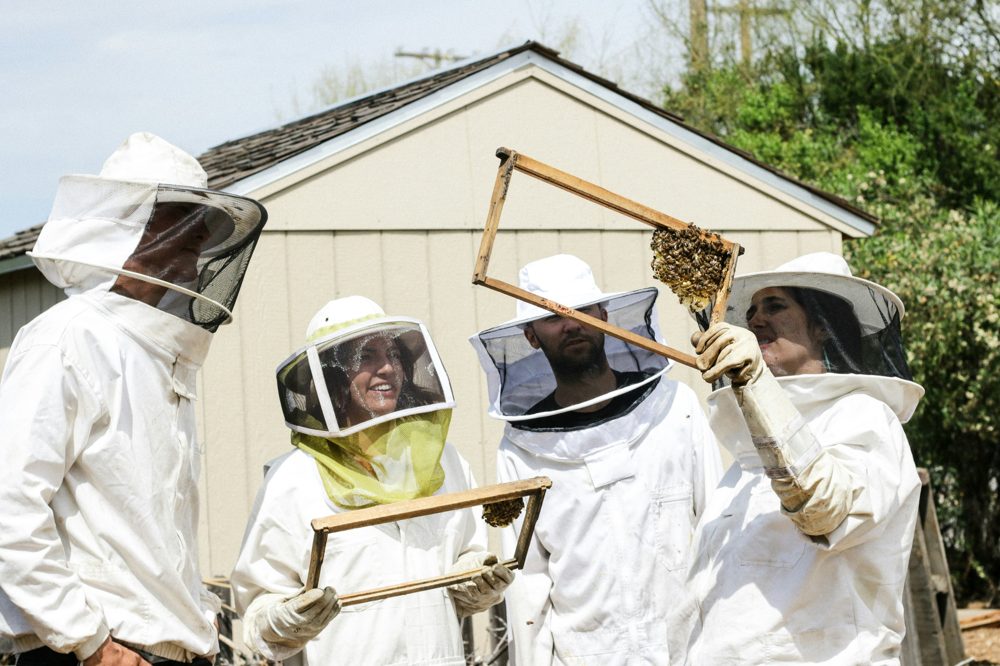

Eco-Friendly Nectar: How Manuka Honey Supports a Sustainable Future
Hey there, honey lovers! 🐝🍯 Ready to dive into something that’s not only delicious but also kind to the planet? Let’s talk about Manuka honey—a sweet treat that’s making waves not just in our kitchens but also in the world of sustainability. Buckle up for a fun ride through the eco-friendly wonders of this golden nectar!
1. Bee-Friendly Practices First off, let’s give a big shoutout to the bees! 🌼🐝 Manuka honey starts with some seriously buzzworthy beekeeping practices. Here’s what makes them so cool: Selective Harvesting: Beekeepers are like bee superheroes, making sure not to take too much honey so our buzzing friends have enough to go around. It’s all about keeping those hives happy and healthy! Pesticide-Free Zone: No nasty chemicals here! Many Manuka honey producers stick to organic methods, keeping our little pollinator pals safe and sound. Habitat Heroes: Beekeepers are tree-huggers at heart. They work to protect and restore the natural habitats that bees love, ensuring there’s plenty of nectar for everyone.
2. Biodiversity Boost Manuka trees aren’t just a pretty face. 🌳 They’re the secret ingredient in our honey and play a big role in supporting local ecosystems: Pollinator Paradise: These trees are like a buffet for bees, providing them with a sweet and nourishing nectar feast. By growing Manuka trees, beekeepers help keep pollinator populations buzzing and thriving. Green Thumb Goals: Some producers get their hands dirty with reforestation projects, helping to restore and enhance local environments. It’s all about giving back to Mother Nature!
3. Low Carbon Sweetness Manuka honey is as kind to the planet as it is to your taste buds. 🌍🍯 Here’s why: Minimal Processing: The journey from hive to jar is pretty low-key. Less processing means less energy use and fewer waste—talk about a win-win! Local Lovin’: Much of the honey is produced close to home, cutting down on transportation and reducing that pesky carbon footprint.
4. Eco-Friendly Choices Want to do your part? Choosing Manuka honey is a sweet way to support sustainability. Here’s how: Support Green Brands: Many Manuka honey brands are all about sustainability. When you buy from them, you’re backing their eco-friendly efforts and encouraging more brands to follow suit. Packaging Perks: Look out for brands offering eco-friendly packaging, like glass jars or recyclable materials. It’s a simple way to reduce plastic waste and keep things green.
Wrap-Up So there you have it—Manuka honey isn’t just a sweet indulgence; it’s a hero for the environment! From bee-friendly practices and biodiversity boosts to low carbon footprints and eco-friendly choices, this nectar is doing its part to make the world a greener place. Next time you enjoy a spoonful of Manuka honey, know that you’re not only treating yourself but also giving a little love to our planet. How’s that for a feel-good snack? 🌟🍯
Stay sweet and eco-friendly, everyone!